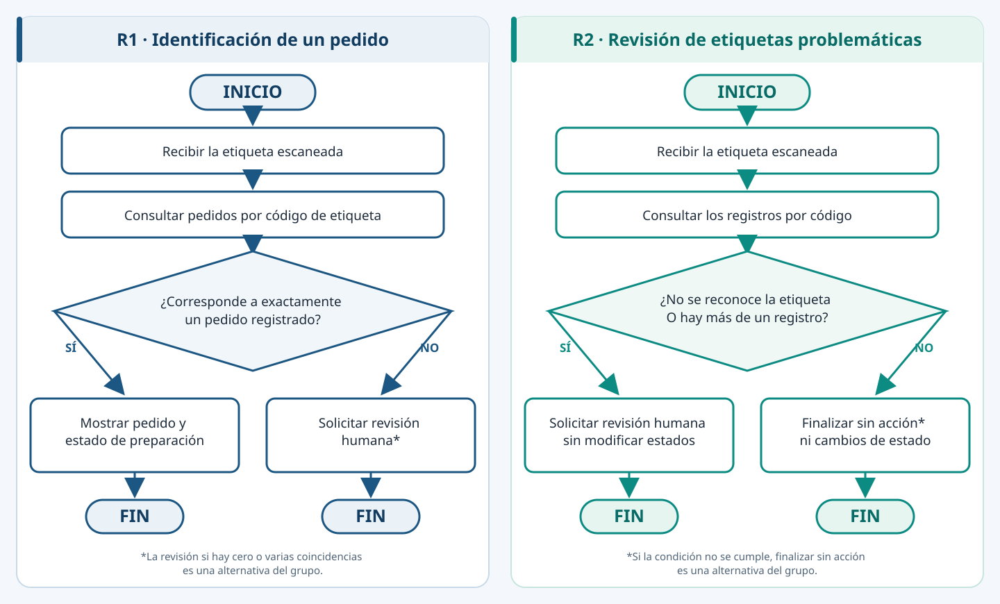

Sentencia original
Si una etiqueta escaneada corresponde a un único pedido registrado, el sistema muestra ese pedido y el estado de preparación del paquete.
Logística y distribución · Origen: IFTS 16
Servicio Control de paquetes y coordinación de retiros
Mediante la lectura de etiquetas y avisos al transportista, FlexControl facilita la identificación de paquetes y la consulta de pedidos. La propuesta aborda el problema de encontrar el pedido correcto y detectar inconsistencias en los registros.
Si una etiqueta escaneada corresponde a un único pedido registrado, el sistema muestra ese pedido y el estado de preparación del paquete.
Un futuro agente consultaría los pedidos registrados usando el código escaneado y, si obtiene una única coincidencia, mostraría el pedido y su estado de preparación. Esto agilizaría la consulta y reduciría búsquedas manuales; para este caso no necesita aprobación humana.
Si la etiqueta no se reconoce o corresponde a más de un registro, el sistema solicita revisión humana y no modifica el estado de ningún pedido.
Un futuro agente verificaría el código escaneado contra los registros y pediría intervención humana si no lo reconoce o encuentra más de una coincidencia. Así se hacen visibles los casos ambiguos sin alterar el estado de ningún pedido; una etiqueta con una sola coincidencia queda fuera de esta regla.

Código obtenido al escanear la etiqueta y registros de pedidos que permitan identificar el pedido y su estado de preparación.
El agente consulta los pedidos registrados y cuenta las coincidencias de la etiqueta. La condición de la sentencia se cumple únicamente si hay exactamente un pedido asociado.
Con una coincidencia, mostrar el pedido y el estado de preparación del paquete. Si hay cero o más de una coincidencia, R1 no define qué hacer; la propuesta del grupo es solicitar revisión humana y no cambiar estados.
Se propone consultar la base de datos o registro de pedidos. La revisión humana sólo se agrega como alternativa de diseño cuando no hay exactamente una coincidencia; el agente no modifica datos.
Código de la etiqueta escaneada y registros disponibles para comprobar si existe y cuántas coincidencias tiene.
La regla usa una disyunción: se activa si la etiqueta no se reconoce O si corresponde a más de un registro. Basta con que se cumpla una de esas condiciones.
Si la condición se cumple, solicitar revisión humana y no modificar el estado de ningún pedido. Si no se cumple, R2 no establece una acción; el grupo propone finalizar el recorrido sin accionar ni modificar estados.
Se propone consultar el registro o base de datos de pedidos. Cuando no hay coincidencias o hay más de una, el agente solicita revisión humana y preserva los estados existentes.
Somos el equipo que diseña propuestas agénticas para simplificar procesos de logística y distribución. Para FlexControl desarrollamos dos soluciones: identificar pedidos por etiqueta y detectar casos que requieren revisión humana.